Animated layout components for Rust
Layout pieces that move: a magnifying dock, marquees, animated lists, card stacks and swaps, carousels and coverflow, expandable cards, masonry, parallax heroes, sticky scroll reveals and animated beams between elements.
All Motion & Layout components
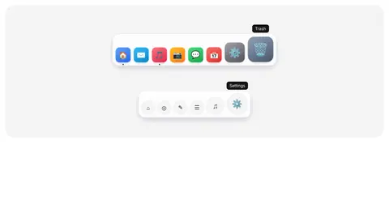
Dock
Motion & LayoutA macOS-style dock: icons magnify around the pointer, show a label and bounce when clicked.
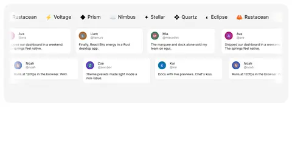
Marquee
Motion & LayoutInfinite scrolling strips of any content with faded edges; hover to pause, reverse for variety.
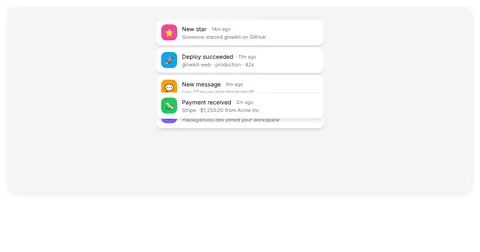
Animated List
Motion & LayoutItems pop in one after another, newest on top, pushing older ones down: a live notification feed.

Stack
Motion & LayoutA draggable card stack: fling the top card away and it tucks itself in at the back.
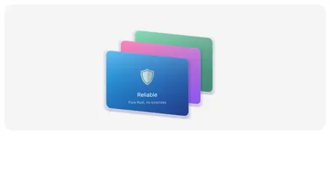
Card Swap
Motion & LayoutA skewed 3D stack that cycles: the front card drops away and reappears at the back.
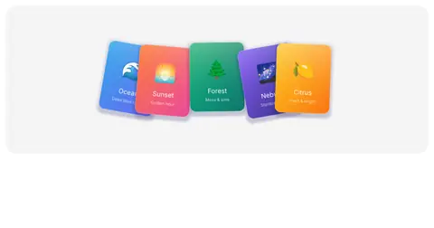
Bounce Cards
Motion & LayoutA fan of cards bounces in one by one; hovering straightens a card and pushes its neighbors aside.

Carousel
Motion & LayoutDrag or swipe between items that snap into place on a spring; neighbors peek in and dots track position.
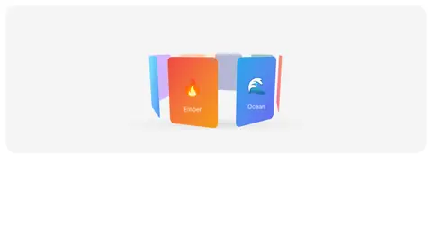
Ring Carousel
Motion & LayoutCards on a rotating 3D ring with real perspective. Drag to spin; it coasts and drifts when idle.
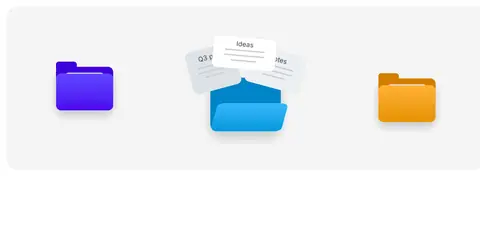
Folder
Motion & LayoutA folder that opens on click: the flap tilts down, papers fan out and lean toward the pointer.
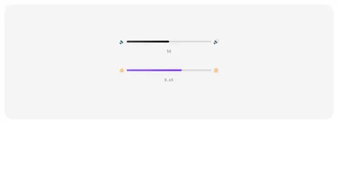
Elastic Slider
Motion & LayoutDrag past either end and the track stretches like rubber, then snaps back with a wobble.
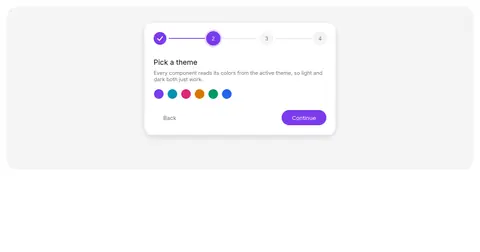
Stepper
Motion & LayoutA multi-step flow with animated indicators, sliding step content and a height that springs to fit.
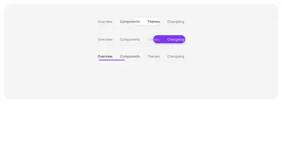
Animated Tabs
Motion & LayoutA highlight springs between tabs, stretching as it travels; a softer hover highlight follows the pointer.
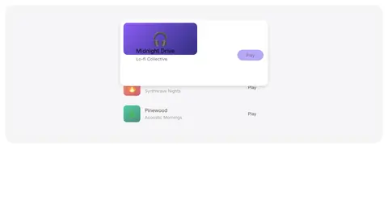
Expandable Card
Motion & LayoutCompact cards grow in place into a detail panel over a dimmed backdrop, and shrink back on close.
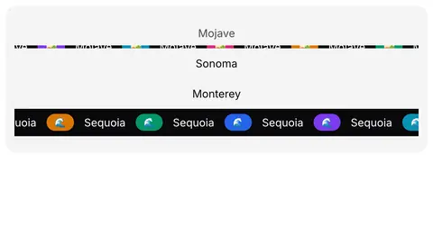
Flowing Menu
Motion & LayoutHovering a row floods it with a contrasting band, entering from the pointer's side, carrying a marquee.
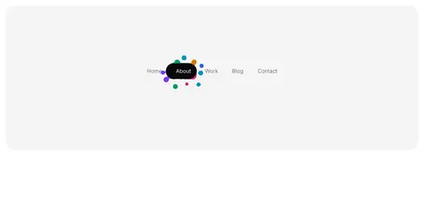
Gooey Nav
Motion & LayoutThe active pill slides to the clicked item while colorful particles burst out and melt back in.
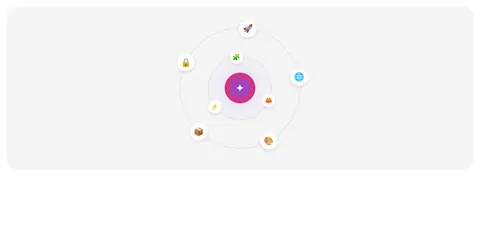
Orbiting Circles
Motion & LayoutIcons circle a center on concentric rings, each ring with its own speed and direction.
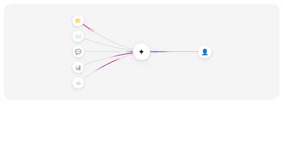
Animated Beam
Motion & LayoutGlowing gradient pulses travel along curved paths between nodes: data flowing through a system.
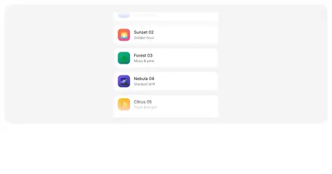
Infinite Scroll
Motion & LayoutAn endless, wrapping vertical list: scroll or drag with inertia, or let it drift. Edges fade out.
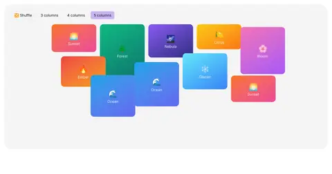
Masonry
Motion & LayoutA masonry grid whose tiles glide to their new places on springs whenever the layout changes.
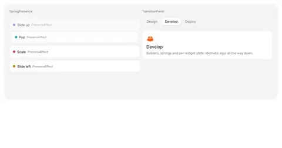
Presence & Transitions
Motion & LayoutAnimate content in and out on a spring (fade, slide, scale, pop), and switch panels with transitions.
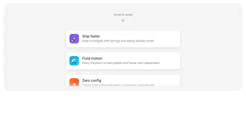
Animated Content
Motion & LayoutWrap anything and it slides, scales and fades into place as it scrolls into view.
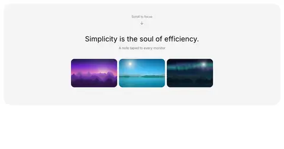
Fade Content
Motion & LayoutContent starts soft, ghosted and transparent, then sharpens into focus when it scrolls into view.

Scroll Stack
Motion & LayoutCards pin near the top as you scroll and pile into a stack, each one shrinking back under the next.
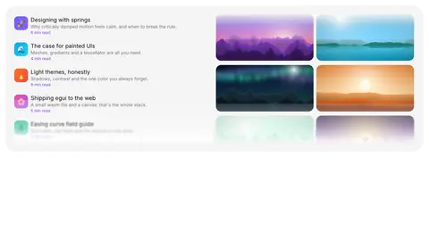
Gradual Blur
Motion & LayoutA progressive blur at the edge of a scroller: content softens and fades in steps as it leaves.

Apple Cards Carousel
Motion & LayoutTall full-bleed image cards in a scrolling row; clicking one morphs it into a large detail dialog.
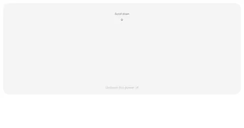
Container Scroll
Motion & LayoutA device mockup tilted back like an opening laptop lid rotates flat as it scrolls into view.
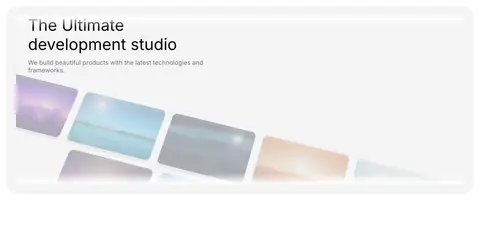
Hero Parallax
Motion & LayoutRows of product tiles start tilted and faded in 3D, then rotate flat and slide in opposite directions as you scroll.
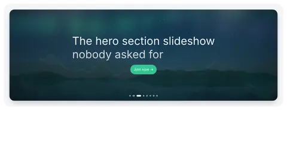
Images Slider
Motion & LayoutFull-bleed slides cross-fade with a zoom-in entrance and a slow Ken Burns push, under a headline and call to action.
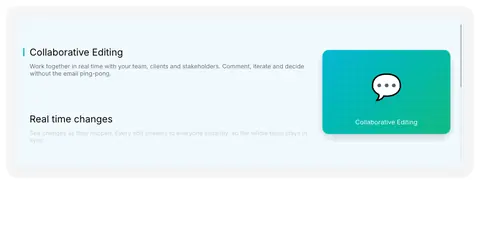
Sticky Scroll Reveal
Motion & LayoutText sections scroll past a sticky panel that swaps its content and tints the backdrop for each one.
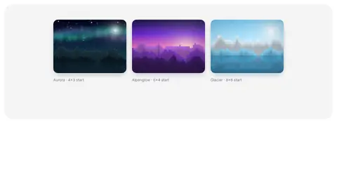
Pixel Image
Motion & LayoutAn image resolves from a few big pixels to full detail: tiles pop in, then the mosaic sharpens step by step.
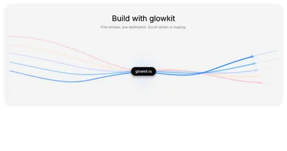
Gemini Effect
Motion & LayoutFive flowing colored curves draw themselves in, converging on a central pill and fanning out again. Bind progress to scroll.
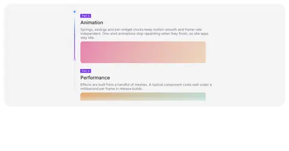
Tracing Beam
Motion & LayoutA gradient beam beside the content that fills as you scroll, with a glowing head on a spring and a dot that lights up. Scrolls itself when idle.
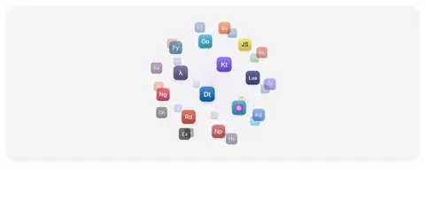
Icon Cloud
Motion & LayoutA sphere of icon tiles rotating in 3D, scaled and faded by depth. It drifts toward the pointer; drag to fling it.
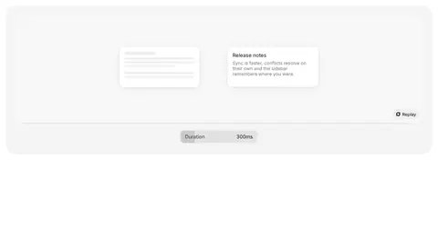
Card Resize
Motion & LayoutA card glides between two sizes on a long smooth curve, its skeleton bars and wrapped text reflowing live as it moves.
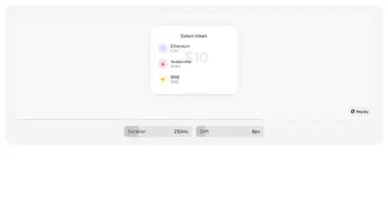
Page Side By Side
Motion & LayoutA two-page card: picking a token drifts the list left and blurs it out while the amount page drifts in from the right, and the card eases to its new height.
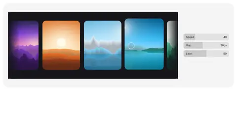
Draggable Marquee
Motion & LayoutA looping strip of portrait images that cruises on its own; grab it, fling it, and it coasts on momentum with cards leaning into the speed.
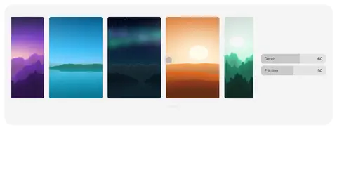
Parallax Slider
Motion & LayoutAn endless strip of tall frames: drag, flick or scroll and each picture drifts against the motion inside its frame; titles rise on hover once still.
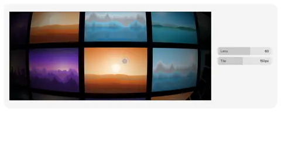
Lens Gallery
Motion & LayoutAn endless wall of photos seen through a fisheye: drag and fling to pan while every tile bows through the barrel lens.
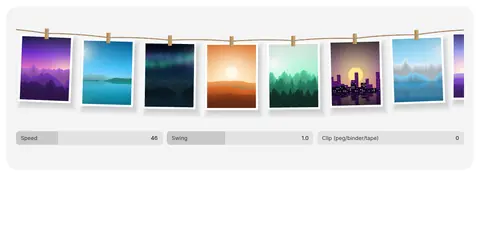
Clothes Line
Motion & LayoutPictures pegged to a sagging rope that drifts past; every card is a pendulum, so they swing and settle as the line speeds up or stops.
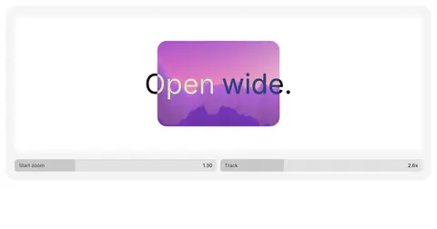
Aperture Zoom
Motion & LayoutA hero that starts as a small rounded window onto an image and opens like a camera aperture as you scroll, the headline's words sliding apart.
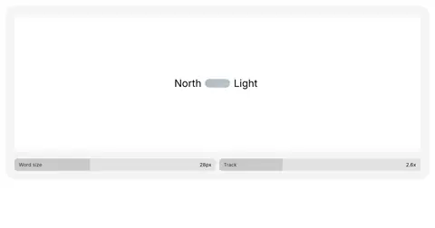
Zoom Reveal
Motion & LayoutA small pill of footage between two words opens into a full-bleed frame as the page scrolls, the words riding its edges out and a play label surfacing.
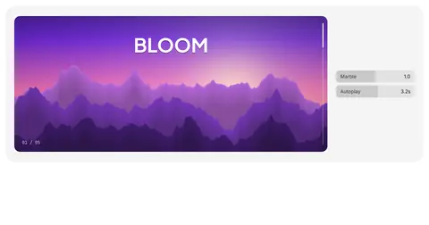
Marble Scroll
Motion & LayoutA scroll story of full-bleed pictures whose seams tear and melt into marbling as they cross the view, strongest when scrolling fast.
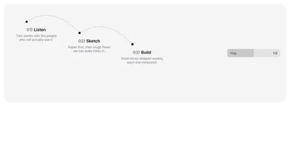
Step Path
Motion & LayoutProcess steps joined by one dashed line hopping dot to dot; it draws in on scroll, steps fading up as it arrives, then a darker stretch travels along it.
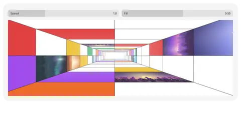
Gallery Tunnel
Motion & LayoutAn endless flight through a square wireframe tunnel lined with images and bold color panels; click or hold to accelerate, the pointer steers the view.
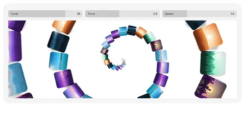
Spiral Images
Motion & LayoutImage cards flow along an Archimedean spiral from the edge into the center, shrinking and turning as they are drawn into the vortex; hover to slow it.
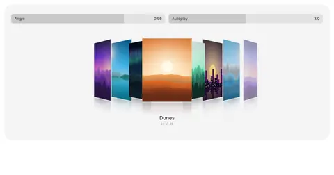
Coverflow Gallery
Motion & LayoutA 3D coverflow carousel: the active slide faces you, neighbours swing back in perspective with a floor reflection; autoplays, drag or click to move.